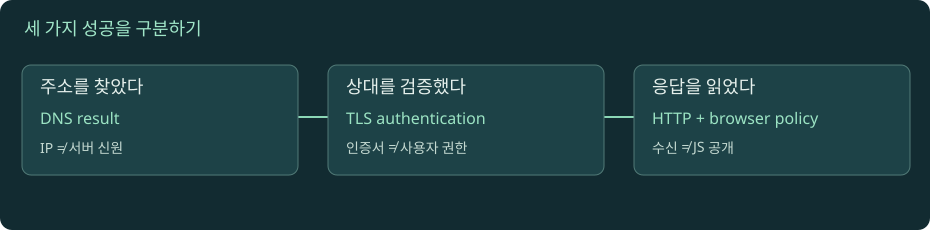

요청 하나로 보는 네트워크 전체 지도
주소를 찾는 일, 상대를 검증하는 일, 요청을 처리하는 일, 브라우저가 응답을 공개하는 일은 서로 다른 단계입니다. 이 경계를 먼저 그리면 나머지 장이 연결됩니다.

요청 한 건을 끝까지 따라가기
자바스크립트를 켜면 실험을 조작할 수 있습니다. 아래 본문·도식·실습은 그대로 읽을 수 있습니다.
01. 이 교재에서 완성할 설명
여러분은 브라우저에서 주문 목록을 여는 요청을 끝까지 추적합니다. api.example.test라는 이름을 주소로 바꾸고, 상대방의 신원을 확인한 다음, 요청과 응답을 교환합니다. 중간 프록시는 캐시에서 응답하거나 별도 연결을 통해 앱에 요청합니다. 화면이 실패했을 때 이 중 어느 단계가 완료됐는지 증거로 좁히는 것이 최종 목표입니다.
TCP/IP의 패킷 구조·라우팅·재전송·혼잡 제어는 기존 TCP/IP 전문가 과정을 전제로 합니다. 여기서는 포트, 연결, RTT, 손실의 의미만 복습합니다. 대신 DNS, HTTP, 브라우저 보안, TLS, 프록시, 운영 진단을 깊게 다룹니다. 처음 보는 약어는 장 안에서 다시 설명합니다.
본문의 example.test, 192.0.2.0/24, 198.51.100.0/24는 교육용 예시입니다. 공개 서버에 실제 연결할 주소가 아닙니다. 실제 명령은 example.com 또는 함께 제공하는 로컬 실습 서버를 사용합니다. 시뮬레이터의 시간과 전송량도 측정 결과가 아니라 개념을 분리하기 위한 입력입니다.
02. URL을 나누면 책임이 보인다
https://api.example.test:443/orders?limit=10#recent
└scheme └hostname └port └path └query └fragmentscheme은 접근 규칙을 나타냅니다. HTTPS 요청은 전송 보호와 인증서 검증을 포함합니다. hostname은 DNS 조회와 서버 신원 확인에 쓰이지만 두 작업은 다릅니다. DNS가 특정 IP를 응답했다고 해서 그 IP의 서버가 요청한 호스트의 정당한 서버로 인증되는 것은 아닙니다.
port는 해당 장치의 어떤 서비스에 연결할지 구분합니다. path와 query는 HTTP 요청 대상으로 서버에 전달됩니다. fragment는 브라우저가 해석하는 부분이므로 HTTP 요청 대상에 포함되지 않습니다. 기본 포트를 생략한 https://api.example.test와 :443을 명시한 URL은 origin 비교에서 같은 기본 포트로 정규화됩니다. WHATWG URL Standard에서 URL 파싱과 origin 정의를 확인할 수 있습니다.
하나의 IP가 여러 호스트를 서비스할 수 있습니다. 따라서 'IP는 맞는데 잘못된 인증서나 다른 사이트가 나온다'는 문제가 가능합니다. TLS의 서버 이름 전달과 HTTP의 authority가 어떤 계층에서 쓰이는지 7장과 9장에서 구분합니다.
03. TCP/IP에서 필요한 네 가지 복습
| 개념 | 이 교재에서 쓰는 의미 | 이것만으로 알 수 없는 것 |
|---|---|---|
| 연결 | 두 종단이 데이터를 교환하기 위한 전송 상태. HTTP 연결을 재사용하면 설정 비용을 반복하지 않을 수 있음 | 연결 성공은 TLS 검증·HTTP 성공·업무 성공을 보장하지 않음 |
| 포트 | 장치에서 서비스의 전송 종단을 구분하는 값 | 443을 쓴다고 서버 인증서가 올바르거나 암호화 설정이 안전하다고 단정할 수 없음 |
| RTT | 왕복 시간. 순차 협상과 검증 요청이 추가되면 대기 비용이 커질 수 있음 | RTT 하나로 서버 실행 시간·다운로드 시간을 계산할 수 없음 |
| 손실 | 데이터 복구가 필요해 전달이 지연될 수 있는 사건 | HTTP 타임아웃만으로 손실 발생이나 원인을 확정할 수 없음 |
브라우저와 프록시가 맺은 연결, 프록시와 앱이 맺은 연결은 별개입니다. 한쪽이 성공해도 다른 쪽은 실패할 수 있습니다. HTTP/3는 TCP 대신 QUIC 위에서 HTTP 의미를 구현하므로 'HTTP는 항상 TCP 위에서 동작한다'는 전제는 두지 않습니다. 세부 전송 비교는 8장에서 다룹니다.
04. DNS 조회는 웹 본문을 운반하는 경로가 아니다
브라우저가 주소를 모르면 리졸버에 이름을 조회합니다. 리졸버는 캐시와 DNS 위임 구조를 이용해 결과를 찾습니다. 그 뒤 브라우저는 얻은 주소를 사용해 웹 서비스에 접속합니다. 일반적인 웹 본문이 DNS 서버를 거쳐 프록시로 흘러가는 것은 아닙니다.
이 구분은 장애를 좁히는 데 바로 쓰입니다. DNS 조회가 실패하면 아직 웹 서버에 연결하지 못했을 수 있습니다. DNS는 성공했는데 연결이 거부되면 주소 조회 이후의 문제입니다. HTTP 404를 받았다면 최소한 응답을 생성한 HTTP 계층까지 도달한 것입니다. 다만 404를 앱이 만들었는지 프록시가 만들었는지는 로그로 더 확인해야 합니다.
DNS 결과가 캐시되어 있으면 새 조회가 생략될 수 있습니다. 기존 연결이 살아 있다면 주소를 다시 찾거나 연결을 다시 만들지 않고 요청할 수도 있습니다. 그래서 같은 URL도 최초 요청과 재요청의 타이밍이 다릅니다.
05. HTTP는 문서 한 개가 아니라 여러 메시지의 규칙
페이지를 열면 HTML뿐 아니라 CSS, 스크립트, 이미지, API 응답을 별도로 요청할 수 있습니다. 요청마다 출처, 캐시 상태, 연결 재사용 여부가 다릅니다. '페이지가 느리다'는 관찰은 어느 리소스가 어느 단계에서 늦었는지로 분해해야 합니다. MDN HTTP 개요는 클라이언트·서버·중간 프록시의 역할을 설명합니다.
요청은 메서드, 대상, 헤더와 선택적 본문을 가집니다. 응답은 상태, 헤더와 선택적 본문을 가집니다. GET /orders가 200을 받는 것과 POST /orders가 결제를 한 번만 수행하는 것은 다른 문제입니다. 프로토콜 의미와 업무의 중복 방지는 4장에서 구분합니다.
실제 전송 형식은 HTTP 버전에 따라 달라집니다. 텍스트로 요청 줄과 헤더를 보는 예제는 HTTP/1.1을 읽기 위한 표현입니다. HTTP/2와 HTTP/3는 프레임과 스트림을 사용하지만 메서드와 상태 코드의 의미는 이어집니다.
06. 암호화·인증·브라우저 정책은 각자 다른 질문에 답한다
TLS는 통신 데이터의 보호와 상대 신원 검증에 관련됩니다. 애플리케이션 인증은 이 사용자가 누구인지, 인가는 어떤 작업을 허용할지 결정합니다. CORS는 브라우저가 교차 출처 응답을 자바스크립트에 공개할지를 제어합니다. 하나를 적용했다고 나머지가 해결되지 않습니다.
예를 들어 HTTPS로 정상 연결된 API가 인증되지 않은 요청을 401로 거절할 수 있습니다. 반대로 인증된 사용자의 요청이 서버에서 성공했는데 브라우저가 CORS 정책 때문에 JS의 응답 읽기를 차단할 수도 있습니다. 인증서 오류를 CORS 설정으로 고칠 수는 없습니다. 실패 단계를 먼저 분리해야 합니다.
프록시가 TLS를 종료하면 프록시는 HTTP를 읽을 수 있습니다. 프록시 이후를 암호화하려면 별도 TLS 연결이 필요합니다. 따라서 HTTPS 주소 하나만 보고 모든 내부 경로가 암호화되어 있다고 판단하면 안 됩니다.
07. 지연은 구간별로, 오류는 관찰 지점별로 본다
요청의 총시간은 DNS, 연결, TLS, 요청 전송, 서버와 업스트림 대기, 응답 전송의 영향을 받습니다. 브라우저 큐와 리다이렉트도 영향을 줄 수 있습니다. 모든 구간이 항상 순서대로 새로 발생하는 것은 아니므로 단일 덧셈 식을 실제 모든 요청에 적용하지 않습니다.
11장의 waterfall은 변수를 분리한 교육 모델입니다. 실제 측정에서는 구간의 정의, 재사용 여부, 도구가 누적 시간을 출력하는지 확인합니다. 첫 바이트까지의 시간은 서버 함수 실행 시간 하나가 아닙니다. 서버 trace와 연결해서 해석해야 합니다.
장애를 기록할 때는 '인터넷이 안 된다' 대신 시각, 관찰한 클라이언트, URL의 호스트와 경로, 오류 문구, 응답 생성 계층, 요청 ID를 기록합니다. 아직 확인되지 않은 가설은 사실과 나누어 적습니다. 마지막 장에서 이 방식으로 사례를 해결합니다.
08. 읽기·예측·조작·검증 순서로 공부하기
- 각 장 첫 실험에서 버튼을 누르기 전에 다음 결과를 예측합니다.
- 변수를 하나 바꾸고 그림의 어느 경로가 바뀌는지 관찰합니다.
- 본문에서 그 결과가 생기는 원인을 찾습니다. 용어를 외우는 것으로 끝내지 않습니다.
- 실제 명령으로 관찰 가능한 값과 시뮬레이터가 단순화한 값을 구분합니다.
- 확인 문제에서 정답을 고른 이유와 오답의 이유를 설명합니다.
단원별 60~100분은 첫 읽기와 핵심 실험의 대략적인 안내입니다. 심화 실습과 복습까지 포함하면 더 걸립니다. DNS 2~3장, HTTP 4~6장, 보안·전송 7~8장, 서비스 경계 9~10장, 운영 11~12장 순으로 진행하세요. 2장씩 나누면 약 6주 학습 흐름이 됩니다.
개발자 도구에서 요청 한 건의 증거 모으기
- 브라우저에서 https://example.com을 열고 개발자 도구의 Network 탭을 엽니다. 도구 이름과 위치는 브라우저에 따라 다릅니다.
- 기록을 유지한 상태로 새로고침합니다. 문서 요청을 선택하고 Request URL, Method, Status, Protocol을 적습니다. Protocol 열은 별도로 켜야 보일 수 있습니다.
- Headers에서 요청 헤더와 응답 헤더를 구분합니다. Preview 화면의 JSON과 실제 헤더 영역을 혼동하지 않습니다.
- Timing에서 DNS, 연결, SSL, 대기, 다운로드 구간을 찾습니다. 기존 연결이나 캐시를 재사용하면 일부가 없거나 0으로 표시될 수 있습니다.
- 한 번 더 새로고침하고 두 기록을 비교합니다. Disable cache는 모든 DNS 캐시와 기존 연결을 초기화하는 기능이 아닙니다.
- 다음 명령으로 브라우저 외의 관찰을 확보합니다.
curl의 버전·TLS 백엔드·HTTP/2 지원 여부와 응답 프로토콜을 기록합니다. 응답 내용·주소·헤더는 시점과 환경에 따라 달라집니다.curl -V curl -v --max-time 10 https://example.com/
예상 결과는 HTTPS 요청의 상태·헤더·타이밍을 확인하는 것입니다. 반드시 200이거나 특정 HTTP 버전이라고 가정하지 마세요. 프록시·VPN·보안 제품·DNS 환경이 결과를 바꿀 수 있습니다. 관찰값과 추정 원인을 분리해서 적으면 실습 완료입니다. curl 공식 매뉴얼
로컬 실습 서버 실행과 공통 명령은 실습 안내에서 확인하세요. 실제 HTTPS·HTTP/2·HTTP/3 서버를 제공하는 실습은 아닙니다.
이해도 확인
선택 후 이유를 설명하고 정답을 확인하세요.
원전과 더 읽을 자료
표준과 공식 문서를 참고해 독립적으로 구성한 학습 설명입니다. 예시 결과와 시간은 명시한 경우를 제외하면 교육용입니다. 확인 기준: 2026-11-09.
진행률은 현재 브라우저에 저장됩니다. 파일 직접 열기와 HTTP 접속은 저장 공간이 다를 수 있습니다.